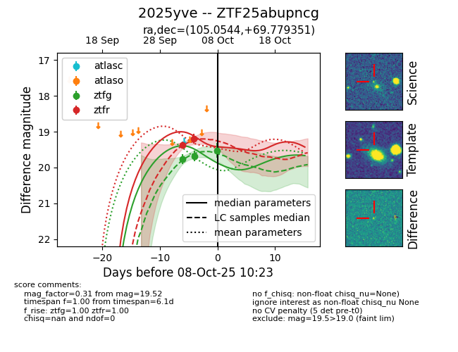
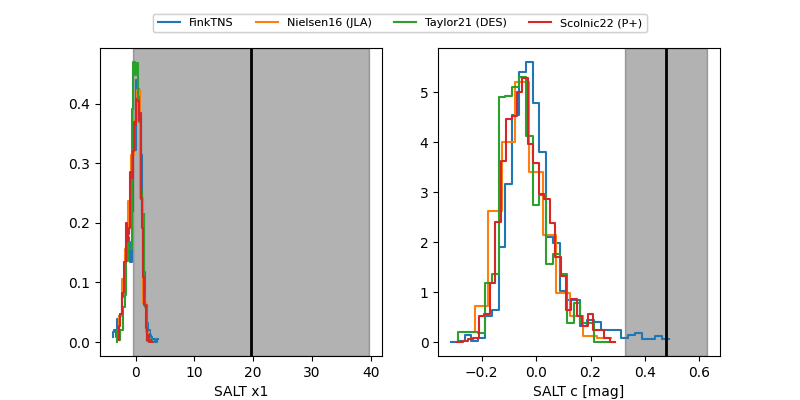

FINK: ZTF25abupncg
Lasair: ZTF25abupncg
ALeRCE: ZTF25abupncg
TNS: 2025yve
YSE: 2025yve
ZTF25abupncg (ztf,fink)
2025yve (tns,yse)
equatorial (ra, dec) = (105.0544,+69.77935)
galactic (l, b) = (145.5473,+26.08234)


last ztfg=19.52, ztfr=19.19
3 ztfg, 2 ztfr detections